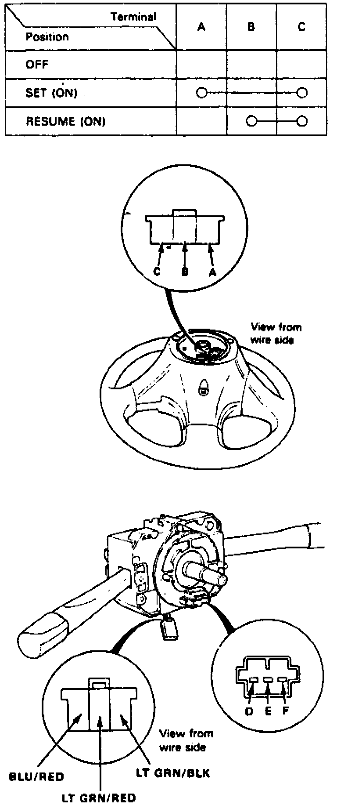

Set/Resume/Cancel Switch
Fig. 21 Set/Resume/Cancel Switch:

1. Remove steering wheel and check for continuity between terminals in each switch position as shown in Fig. 21.
2. Remove column cover, then disconnect 3 pin connector.
3. If any one or more do not have continuity, replace switch.